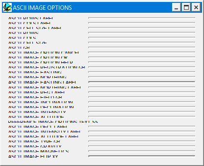

Importing potential-field images
This menu allows you to convert tab or space delimited ASCII text files into Noddy format .grv or .mag geophysics files. These files must represent evenly spaced rectangular gravity or TMI sample points. This is useful if:
- You want to use Noddy for contouring or other display of raw geophysical data, or
- You want to create a reference dataset.

| GROUP | NAME | FUNCTION |
|---|---|---|
| Image Dimensions | Num of Rows | Number of rows (Y direction) of data points in image |
| Num of Columns | Number of columns (X direction) of data points in image | |
| Image Type | Select data type of image (gravity or magnetics) | |
| Registration | Cell Size | Dimensions of cells in metres |
| Easting | Eastings of South West corner of Image | |
| Northing | Northings of South West corner of Image | |
| Field | Inclination | Inclination of Earth's magnetic field in area of survey |
| Declination | Declination of Earth's magnetic field in area of survey | |
| Intensity | Intensity of Earth's magnetic field in area of survey | |
| Altitude | Altitude of survey |
Noddy · open source under the MIT licence · Loop3D/noddy_qt